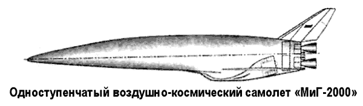
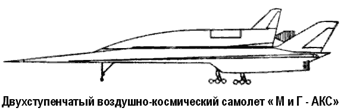

Космопланы «МиГ-2000» и «МиГ-АКС»
Современные исследования тенденций развития и возможностей создания отечественных многоразовых средств космического выведения проводятся в соответствии с Государственной космической программой в рамках научно-исследовательской и экспериментальной работы «Орел», выполняемой по заказу Российского космического агентства.
С 1993 по 1996 год работы по теме «Орел» велись в ЦНИ И машиностроения, ЦАГИ имени Жуковского, Исследовательском центре имени Келдыша и в других организациях.
Проведенные в ЦНИИ Машиностроения параметрические расчеты и сравнительный анализ многоразовых одно- и двухступенчатого носителей с различными двигателями показали, что при снижении сухой массы летательного аппарата примерно на 30 % по сравнению с системой «Спейс Шаттл» или «Энергия-Буран» одноступенчатый носитель грузоподъемностью от 10 до 20 тонн должен иметь преимущества перед двухступенчатыми той же массы как по затратам на разработку, так и по удельной стоимости выведения.
Среди выдвинутых проектов воздушно-космических самолетов в особую группу можно выделить аппараты, разрабатываемые в авиационном конструкторском бюро имени Микояна — «МиГ-2000» и «МиГ-АКС».
«МиГ-2000» — одноступенчатый воздушно-космический самолет (длина фюзеляжа — 54,1 метра, базовый диаметр — 19,7 метра) со взлетным весом 300 тонн, способный выводить полезную нагрузку до 9 тонн на орбиту высотой 200 километров с наклонением 51°. После разгона ускорителем на ЖРД до 0,8 Махов, прямоточный воздушно-реактивный двигатель с дозвуковым горением обеспечивал дальнейший разгон до 5 Махов. В качестве ракетного топлива должен был использоваться переохлажденный водород и жидкий кислород. При возращении был возможен боковой маневр до 3000 километров.
«МиГ-АКС» — двухступенчатый воздушно-космический самолет, создаваемый на основе оригинальной концепции электромагнитной левитации «ЭТОЛ».
Эта концепция была впервые выдвинута специалистами КБ имени Микояна и ЦАГИ на Международном авиакосмическом салоне «МАКС'99». Летательные аппараты, базирующиеся на концепции электромагнитной левитации, должны садиться и взлетать с электромагнитной ВПП, позволяющей ускорить разгон при взлете и обеспечить торможение при посадке с помощью известного принципа взаимодействия движущегося тела с магнитным полем. Идея была уже испытана в лаборатории на алюминиевых макетах «электромагнитного беспилотного моноплана» массой от 2 до 10 килограммов, который разгоняли и тормозили с помощью методики «ЭТОЛ» на полосе длиной 5 метров.


Разгонная взлетно-посадочная полоса длиной 4 километра, проектируемая под «МиГ-АКС», формируется из 40 компонентов мощностью 1010 Дж, которые позволят за 1015 секунд осуществить взлет самолета массой от 200 до 700 тонн. При этом ускорение составит от 2 до 30 g, а скорость — 300–500 м/с. Не исключается возможность разгона до 100 м/с аппарата без шасси массой от 50 до 150 тонн.
Дальнейший разгон аппарата и выведение его на орбиту осуществляется комбинированной двигательной установкой на основе турбопрямоточных и жидкостных ракетных двигателей.
Стартовая масса «МиГ-АКС» составляет 420 тонн, максимальная полезная нагрузка, выводимая на орбиту высотой 400 километров, — до 7 тонн, возвращаемый с орбиты груз — до 7 тонн.
Та же методика электромагнитных запусков предложена и для многоцелевого беспилотного самолета (противолавинные и противоградовые меры, геологоразведка, наблюдение за экологией и состоянием лесов), а также для самолета для спасения на море массой от 15 до 40 тонн, который будет взлетать (и совершать посадку туда же) с палубы авианосца, имеющего электромагнитную ВПП длиной от 150 до 200 метров.